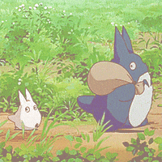

Studio Ghibli
Studio Ghibli Inc. (Japanese: 株式会社スタジオジブリ, Hepburn: Kabushiki-gaisha Sutajio Jiburi) is a Japanese animation studio headquartered in Koganei, Tokyo. It's best known for it's animated feature films, and has also produced several short subjects, television commercials, and two television films. Its mascot and most recognizable symbol is a character named Totoro, a giant spirit inspired by raccoon dogs (tanuki) and cats from the 1988 anime film My Neighbor Totoro. Among the studio's highest-grossing films are Spirited Away (2001), Howl's Moving Castle (2004) and Ponyo (2008). The studio was founded on June 15, 1985, by directors Hayao Miyazaki and Isao Takahata and producer Toshio Suzuki, after the successful performance of Topcraft's Nausicaä of the Valley of the Wind (1984). It has also collaborated with video game studios on the visual development of several games.
Five of the studio's films are among the ten highest-grossing anime feature films made in Japan. Spirited Away is second, grossing 31.68 billion yen in Japan and over US$380 million worldwide; and Princess Mononoke is fourth, grossing 20.18 billion yen. Many of their works have won the Animage Grand Prix award. Four have won the Japan Academy Prize for Animation of the Year. Five of their films have received Academy Award nominations. Spirited Away won the 2002 Golden Bear and the 2003 Academy Award for Best Animated Feature.
On August 3, 2014, Studio Ghibli temporarily suspended production following Miyazaki's retirement. In February 2017, Suzuki announced that Miyazaki had come out of retirement to direct a new feature film, How Do You Live?, which he intended to be his last film.
Tokuma Shoten era
Founded on June 15, 1985, Studio Ghibli was headed by directors Hayao Miyazaki and Isao Takahata and producer Toshio Suzuki. Miyazaki and Takahata had already had long careers in Japanese film and television animation and had worked together on The Great Adventure of Horus, Prince of the Sun in 1968 and the Panda! Go, Panda! films in 1972 and 1973. In 1978, Suzuki became an editor at Tokuma Shoten's Animage manga magazine, where the first film he chose was Horus. A year after his phone call with Takahata and his first encounter with Miyazaki, both about Horus, he made a phone call about the first film Miyazaki ever directed: The Castle of Cagliostro.

The studio was founded after the success of the 1984 film Nausicaä of the Valley of the Wind. Suzuki was part of the film's production team, and founded Studio Ghibli with Miyazaki, who also invited Takahata to join them.
he studio has mainly produced films by Miyazaki, with the second most prolific director being Takahata (most notably with Grave of the Fireflies). Other directors who have worked with Studio Ghibli include Yoshifumi Kondō, Hiroyuki Morita, Gorō Miyazaki, and Hiromasa Yonebayashi. Composer Joe Hisaishi has provided the soundtracks for most of Miyazaki's Studio Ghibli films. In their book Anime Classics Zettai!, Brian Camp and Julie Davis made note of Michiyo Yasuda as "a mainstay of Studio Ghibli's extraordinary design and production team". At one time the studio was based in Kichijōji, Musashino, Tokyo.
In August 1996, The Walt Disney Company and Tokuma Shoten formed a partnership wherein Walt Disney Studios would be the sole international distributor for Tokuma Shoten's Studio Ghibli animated films. Under this agreement, Disney also agreed to finance 10% of the studio's production costs. Since then, all three aforementioned films by Miyazaki at Studio Ghibli that were previously dubbed by Streamline Pictures have been re-dubbed by Disney. On June 1, 1997, Tokuma Shoten Publishing consolidated its media operations by merging Studio Ghibli, Tokuma Shoten Intermedia software and Tokuma International under one location.
Over the years, there has been a close relationship between Studio Ghibli and the magazine Animage, which regularly runs exclusive articles on the studio and its members in a section titled "Ghibli Notes." Artwork from Ghibli's films and other works are frequently featured on the cover of the magazine. Saeko Himuro's novel Umi ga Kikoeru was serialised in the magazine and subsequently adapted into Ocean Waves, Studio Ghibli's first animated feature-length film created for television. It was directed by Tomomi Mochizuki.
In October 2001, the Ghibli Museum opened in Mitaka, Tokyo. It contains exhibits based on Studio Ghibli films and shows animations, including a number of short Studio Ghibli films not available elsewhere.
The studio is also known for its strict "no-edits" policy in licensing their films abroad due to Nausicaä of the Valley of Wind being heavily edited for the film's release in the United States as Warriors of the Wind. The "no cuts" policy was highlighted when Miramax co-chairman Harvey Weinstein suggested editing Princess Mononoke to make it more marketable. A Studio Ghibli producer is rumoured to have sent an authentic Japanese sword with a simple message: "No cuts".
